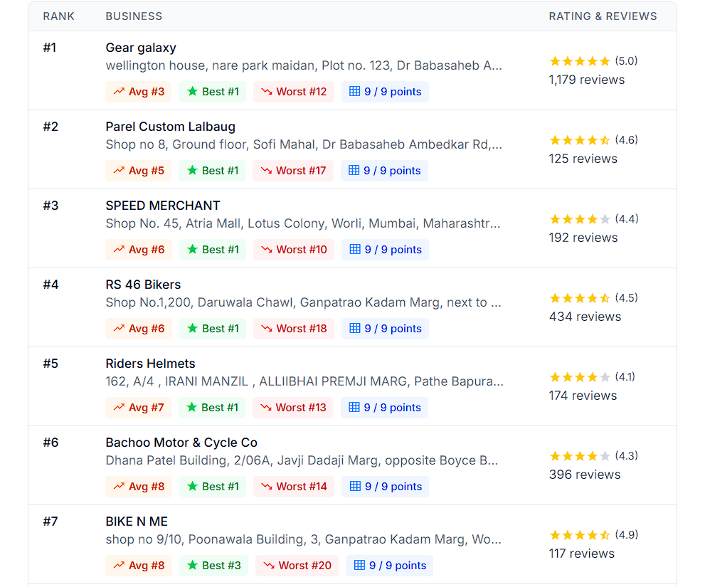
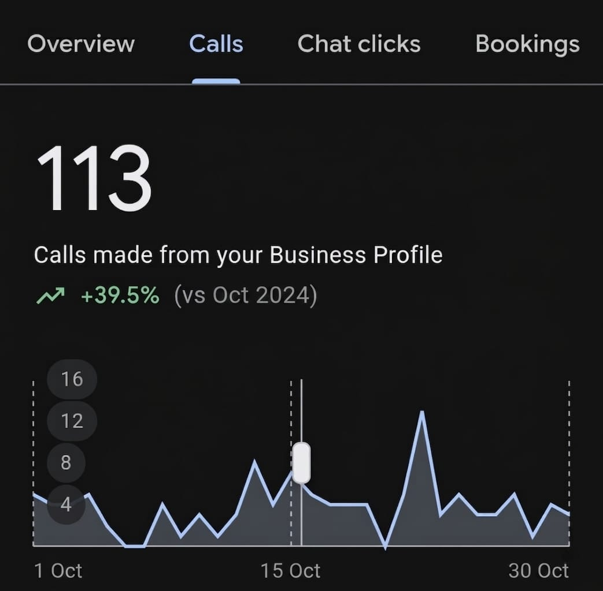

GBP Optimization
Reviewed and improved the core structure and information of the Google Business Profile.
A focused Google Business Profile optimization project designed to strengthen Bike N Me's local visibility, increase customer actions and improve its position for helmet and riding-gear searches across Mumbai.
Bike N Me operates in a highly competitive
motorcycle helmet and riding-gear market in Mumbai.
The objective was to improve the business's
visibility when potential customers searched
for helmets and related riding products nearby.
Instead of treating the Google Business Profile
as a basic business listing, we focused on
optimizing the profile around local relevance,
customer discovery and actions.
Helmet and riding-gear searches in Mumbai are highly competitive, requiring stronger local relevance and profile signals.
The profile needed to become more relevant for customers actively searching for helmets, riding gear and related products.
Higher visibility needed to translate into meaningful customer actions, particularly calls from potential buyers.
Before GBP optimization
Mumbai helmet-store search visibility
The optimization focused on the profile elements that contribute to relevance, trust and customer discovery.
Reviewed and structured important business information to create a clearer customer-facing profile.
Strengthened category relevance around the business's helmet and riding-gear offering.
Improved business messaging around products, customer intent and local search relevance.
Organized relevant offerings to make the profile more useful to customers researching riding gear.
Improved the visual presentation of the profile to create stronger customer trust and product discovery.
Strengthened the profile's customer-facing signals and engagement opportunities.
Focused the profile around relevant Mumbai and local helmet-store search intent.
Monitored profile actions and ranking movement to evaluate the impact of the optimization.
The approach was centered on making the Google Business Profile more relevant to customers looking for helmets and riding gear in Mumbai.
Profile audit and opportunity identification
Business information and category optimization
Product, service and local relevance improvements
Visual and customer-facing profile improvements
Ranking and customer-action monitoring
Reviewed and improved the core structure and information of the Google Business Profile.
Aligned the profile more closely with relevant helmet and riding-gear search intent.
Improved the profile's customer-facing content and visual presentation.
Tracked customer actions and local ranking movement after the optimization.
The optimization produced measurable movement in local visibility and customer interactions. Replace the call figure below with the exact verified GBP Insights percentage.
Showcase the actual Google Business Profile ranking screenshots, Insights data and profile work completed for Bike N Me.



For a competitive category such as helmets and motorcycle riding gear, simply having a Google Business Profile is not enough. The profile needs to communicate relevance, location, products and trust clearly to both Google and potential customers.
Bike N Me's case demonstrates how a focused GBP optimization can improve local visibility and help a business compete more effectively for high-intent searches in Mumbai.
Get a free GBP audit from The Media Grid and discover the biggest opportunities in your current Google presence.
Get My Free GBP Audit